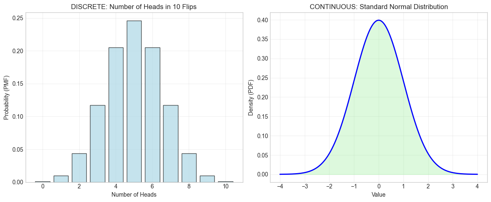
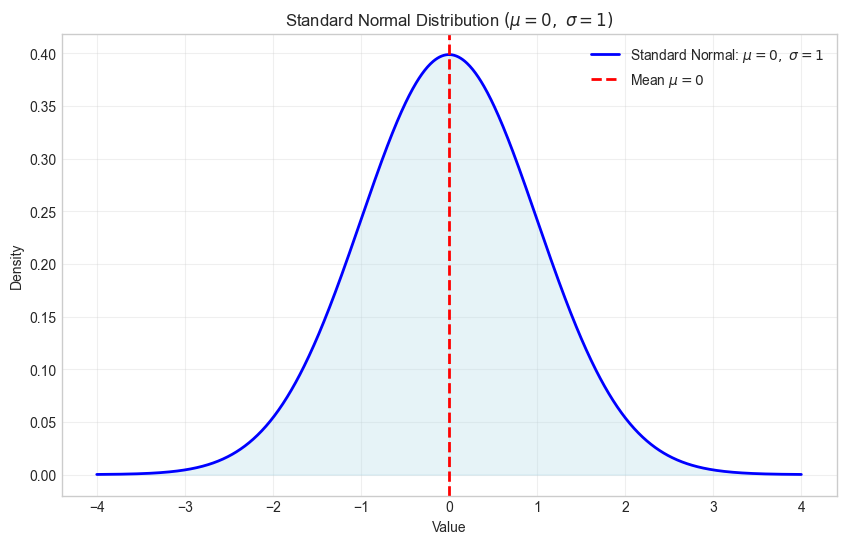
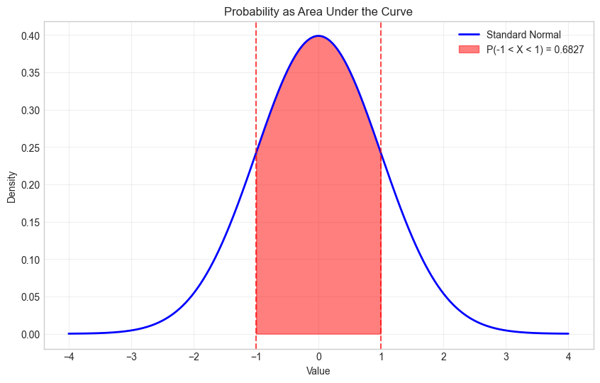
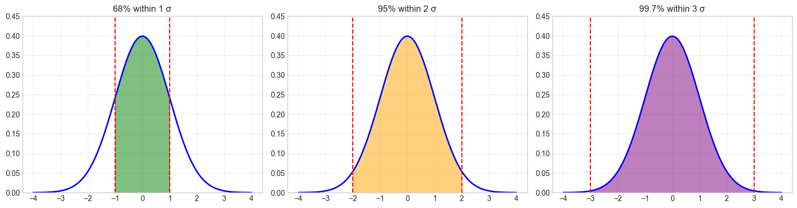
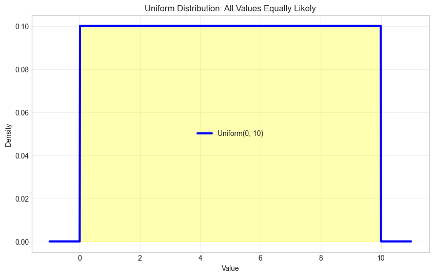
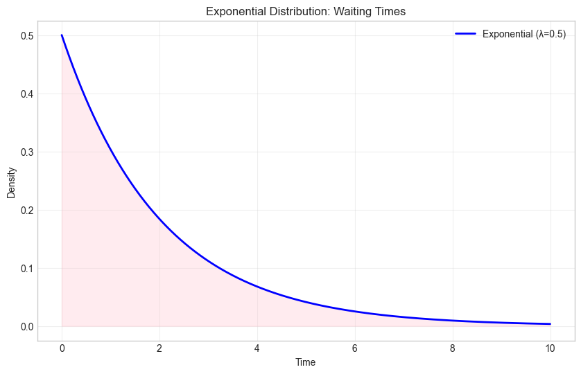
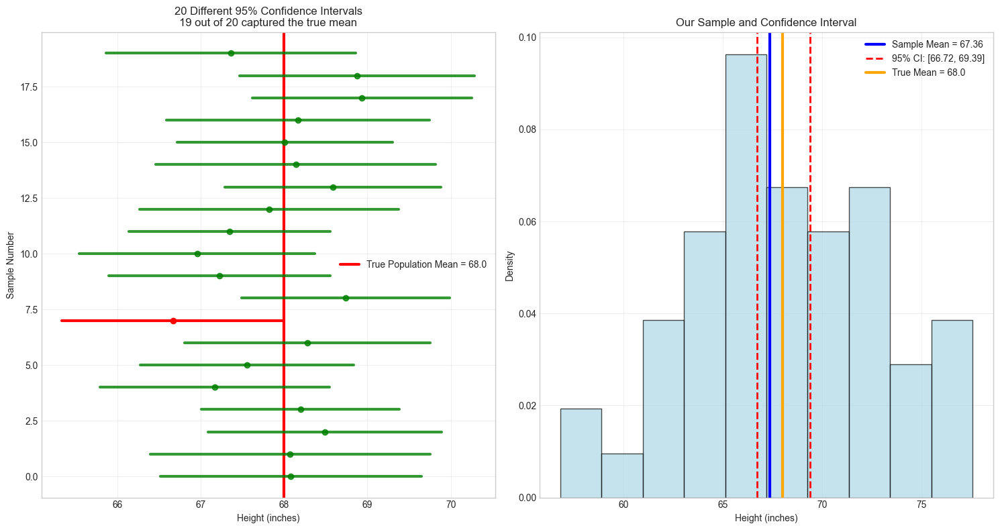
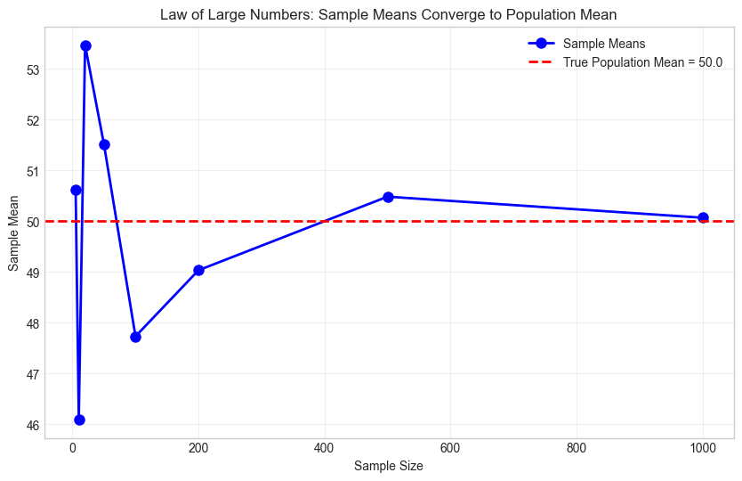

Lab 5: Continuous Random Variables & Confidence Intervals
PSTAT 5A - Summer Session A 2025
Author
Instructor: Narjes Mathlouthi
Published
July 21, 2025
Welcome to Lab 5! Today we’re moving from discrete (countable) to continuous (measurable) random variables. We’ll explore the normal distribution, learn about sampling, and get our first taste of confidence intervals!
Getting Started
⏱️ Estimated time: 2 minutes
Navigate to our class Jupyterhub Instance. Create a new notebook and rename it “lab5” (for detailed instructions view lab1).
Setup
First, let’s load our tools! Copy the below code to get started!
We’ll be using the following core libraries:
NumPy: Fundamental package for fast array-based numerical computing.
Matplotlib (pyplot): Primary library for creating static 2D plots and figures.
SciPy (stats): Collection of scientific algorithms, including probability distributions and statistical tests.
Pandas: High-performance data structures (DataFrame) and tools for data wrangling and analysis.
Statsmodels: Econometric and statistical modeling for regression analysis, time series, and more.
# Install any missing packages (will skip those already installed)#%pip install --quiet numpy matplotlib scipy pandas statsmodels --> uncommnent to install packages if needed# Load our tools (libraries)import numpy as np # numerical computing (arrays, random numbers, etc.)import matplotlib.pyplot as plt # plotting library for static 2D graphs and visualizationsfrom scipy import stats # statistical functions (distributions, tests, etc.)import pandas as pd # data structures (DataFrame) and data analysis toolsimport statsmodels # statistical modeling (regression, time series, ANOVA, etc.)# Make our graphs look nice#!%matplotlib inline # uncommnent to embed Matplotlib plots directly in the notebookplt.style.use('seaborn-v0_8-whitegrid') # Apply a clean whitegrid style from Seaborn# Set random seed for reproducible resultsnp.random.seed(42) # fix the random seed so results can be reproduced exactlyprint("✅ All tools loaded successfully!")
✅ All tools loaded successfully!
Note
New for today: We’ll use the same tools but focus on continuous distributions - where variables can take any value in a range (like height, weight, temperature) rather than just counting things.
Part 1: Discrete vs. Continuous - What’s the Difference?
⏱️ Estimated time: 8 minutes
Understanding the Difference
Let’s start by understanding what makes a variable continuous:
# Examples of different variable typesprint("DISCRETE VARIABLES (countable):")print("• Number of students in class: 0, 1, 2, 3, ...")print("• Number of emails received: 0, 1, 2, 3, ...")print("• Number of coin flips showing heads: 0, 1, 2, 3, ...")print()print("CONTINUOUS VARIABLES (measurable):")print("• Height: 5.5 ft, 5.73 ft, 6.02541 ft, ...")print("• Temperature: 72.1°F, 72.15°F, 72.152°F, ...")print("• Time: 2.5 seconds, 2.51 seconds, ...")
DISCRETE VARIABLES (countable):
• Number of students in class: 0, 1, 2, 3, ...
• Number of emails received: 0, 1, 2, 3, ...
• Number of coin flips showing heads: 0, 1, 2, 3, ...
CONTINUOUS VARIABLES (measurable):
• Height: 5.5 ft, 5.73 ft, 6.02541 ft, ...
• Temperature: 72.1°F, 72.15°F, 72.152°F, ...
• Time: 2.5 seconds, 2.51 seconds, ...
Key Difference: PMF vs PDF
Important
Important Distinction:
Discrete: Use PMF (Probability Mass Function) - gives exact probabilities
Example: P(exactly 3 heads) = 0.125
Continuous: Use PDF (Probability Density Function) - gives probability densities
We first define the key parameters for a binomial distribution with n (number of trials) and p (success probability).
Then, we create a probability mass function (PMF) by first generating all possible outcomes from 0 to 11 using np.arange():
# Create outcomes from 0 to n (inclusive)x_discrete = np.arange(0, n+1)
Important
For a binomial distribution with \(10\) trials, the possible number of successes are:
\(0 \quad \text{successes}, 1 \quad \text{success}, 2 \quad \text{successes}, ..., 10 \quad \text{successes}\) That’s \(11\) different outcomes total (0 through 10 inclusive). When we use np.arange(0, 11), we get: \([0, 1, 2, 3, 4, 5, 6, 7, 8, 9, 10]\) If we mistakenly used np.arange(0, 10), we’d get: \([0, 1, 2, 3, 4, 5, 6, 7, 8, 9]\) and miss the case where all \(10\) trials are successes!
Once we have our values, we compute the PMF using python y_discrete = stats.binom(n, p).pmf(x_discrete)
from SciPy’s stats.binom.
Lastly, we plot these probabilities as a bar chart on the left subplot.
Next to illustrate a continuous random variable (i.e., Standard Normal), we start by creating the range of values needed to create a probability density function (PDF). We create a smooth grid of values with
Lastly, we draw the curve and shade underneath on the right subplot.
Optional: plt.tight_layout() to automatically adjust spacing so that titles, labels, and ticks don’t overlap.
# Create a figure with 1 row and 2 columns of axes, total size 12x5 inchesfig, (ax1, ax2) = plt.subplots(1, 2, figsize=(12, 5))# ── Discrete example: Binomial distribution ────────────────────────────────────n, p =10, 0.5# number of trials and success probabilityx_discrete = np.arange(0, 11) # possible counts: 0 through 10 headsy_discrete = stats.binom(n, p).pmf(x_discrete) # compute PMF at each countax1.bar( x_discrete, y_discrete, # x-values and their probabilities alpha=0.7, # make bars semi-transparent color='lightblue', # fill color for the bars edgecolor='black'# outline color for clarity)ax1.set_title('DISCRETE: Number of Heads in 10 Flips') # subplot titleax1.set_xlabel('Number of Heads') # x-axis labelax1.set_ylabel('Probability (PMF)') # y-axis labelax1.grid(True, alpha=0.3) # light grid lines for readability# ── Continuous example: Normal distribution ───────────────────────────────────x_continuous = np.linspace(-4, 4, 1000) # 1000 points between -4 and +4y_continuous = stats.norm(0, 1).pdf(x_continuous) # standard normal PDF valuesax2.plot( x_continuous, y_continuous, # x-values and density values'b-', # blue solid line linewidth=2# thicker line width for emphasis)ax2.fill_between( x_continuous, y_continuous, # shade area under the curve alpha=0.3, # semi-transparent fill color='lightgreen'# fill color)ax2.set_title('CONTINUOUS: Standard Normal Distribution') # subplot titleax2.set_xlabel('Value') # x-axis labelax2.set_ylabel('Density (PDF)') # y-axis labelax2.grid(True, alpha=0.3) # light grid lines for readabilityplt.tight_layout() # adjust spacing so titles/labels don’t overlap

Part 2: The Normal Distribution - The Most Important One!
⏱️ Estimated time: 15 minutes
The normal distribution is everywhere! Heights, test scores, measurement errors; they all tend to follow this bell-shaped pattern.
Standard Normal Distribution
Let’s start with the standard normal: mean = 0, standard deviation = 1.
Recall
The standard normal distribution \(N(0,1)\) is obtained by the linear transformation \[
Z = \frac{X - \mu}{\sigma},
\]
which removes units by centering at zero and scaling to unit variance. Its PDF is \[
\phi(z) = \frac{1}{\sqrt{2\pi}} e^{-z^2/2}.
\]
In SciPy, you can create or shift any normal distribution using the loc (mean) and scale (standard deviation) parameters of stats.norm. In particular, evaluating
stats.norm.pdf(x, loc, scale)
is equivalent to
y = stats.norm(loc=loc, scale=scale).pdf(x)
and under the hood it computes
\[
y = \frac{1}{\sigma},\phi (z) =\Bigl(\frac{x - \mu}{\sigma}\Bigr)
\]
where \(\phi(z)\) is the standard normal PDF.
# Create a standard normal distributionstandard_normal = stats.norm(loc=0, scale=1) # loc=mean, scale=standard deviationprint("Standard Normal Distribution:")print(f"Mean: {standard_normal.mean()}")print(f"Standard deviation: {standard_normal.std()}")# Generate a smooth range of x-values from -4 to +4x = np.linspace(-4, 4, 1000) # 1000 points for a smooth curve y = standard_normal.pdf(x) # compute the pdf# Plot the PDFplt.figure(figsize=(10, 6)) # figure size in inchesplt.plot( x, y, # x-values and PDF values'b-', # blue solid line linewidth=2, label=r'Standard Normal: $\mu=0,\ \sigma=1$'# legend with LaTeX)plt.fill_between( x, y, # shade under the PDF curve alpha=0.3, color='lightblue')plt.title(r'Standard Normal Distribution $(\mu=0,\ \sigma=1)$') # title with LaTeXplt.xlabel('Value') # x-axis labelplt.ylabel('Density') # y-axis labelplt.axvline(0, # vertical line at x=0 color='red', linestyle='--', linewidth=2, label=r'Mean $\mu=0$'# legend entry for the mean line)plt.legend() # display legendplt.grid(True, alpha=0.3) # add light grid lines
Standard Normal Distribution:
Mean: 0.0
Standard deviation: 1.0

Calculating Probabilities with Areas
Important
For continuous distributions, probability = area under the curve!
That is, the probability that \((X)\) falls between \((a)\) and \((b)\) is the area under the PDF from \((x=a)\) to \((x=b)\). SciPy’s stats.norm.cdf computes the cumulative distribution function (CDF)
# Probability that a value is between -1 and 1 - P(-1 < X < 1) for X ~ N(0,1prob_between = standard_normal.cdf(1) - standard_normal.cdf(-1)print(f"P(-1 < X < 1) = {prob_between:.4f}")# Visualize this probabilityx = np.linspace(-4, 4, 1000)y = standard_normal.pdf(x)plt.figure(figsize=(10, 6))plt.plot(x, y, 'b-', linewidth=2, label='Standard Normal')# Shade the area between -1 and 1x_fill = x[(x >=-1) & (x <=1)]y_fill = standard_normal.pdf(x_fill)plt.fill_between(x_fill, y_fill, alpha=0.5, color='red', label=f'P(-1 < X < 1) = {prob_between:.4f}')plt.title('Probability as Area Under the Curve')plt.xlabel('Value')plt.ylabel('Density')plt.axvline(-1, color='red', linestyle='--', alpha=0.7)plt.axvline(1, color='red', linestyle='--', alpha=0.7)plt.legend()plt.grid(True, alpha=0.3)plt.show()
P(-1 < X < 1) = 0.6827

Task 1: Your First Normal Distribution
⏱️ Estimated time: 6 minutes
Let’s say human heights follow a normal distribution with mean = 68 inches and standard deviation = 4 inches.
# a) What's the probability someone is taller than 72 inches (6 feet)?prob_tall =1- heights.cdf(___) # Fill in: 72print(f"P(height > 72 inches) = {prob_tall:.4f}")# b) What's the probability someone is between 64 and 72 inches?prob_between = heights.cdf(___) - heights.cdf(___) # Fill in both valuesprint(f"P(64 < height < 72) = {prob_between:.4f}")# c) What height is at the 90th percentile? (90% of people are shorter)height_90th = heights.ppf(___) # ppf = "percent point function" (inverse of cdf)print(f"90th percentile height: {height_90th:.2f} inches")
Step 3: Make a visualization
# Plot the height distributionx = np.linspace(50, 86, 1000)y = heights.pdf(x)plt.figure(figsize=(10, 6))plt.plot(x, y, 'b-', linewidth=2)plt.fill_between(x, y, alpha=0.3, color='lightgreen')plt.title('Human Heights Distribution')plt.xlabel('Height (inches)')plt.ylabel('Density')plt.axvline(mean_height, color='red', linestyle='--', linewidth=2, label=f'Mean = {mean_height} inches')plt.legend()plt.grid(True, alpha=0.3)plt.show()
The 68-95-99.7 Rule
This rule (also called the empirical rule) describes how data are distributed in a normal distribution:
About 68% of observations fall within one standard deviation of the mean (\(\mu \pm 1\sigma\)).
About 95% lie within two standard deviations (\(\mu \pm 2\sigma\)).
Nearly 99.7% lie within three standard deviations (\(\mu \pm 3\sigma\)).
In practice, this gives a quick way to gauge how “typical” a value is: if a point lies beyond \(\pm 2\sigma\), it’s already in the outer 5% and might be considered unusual or an outlier.
# The 68-95-99.7 rule for standard normalmean, std =0, 1prob_68 = stats.norm.cdf(1) - stats.norm.cdf(-1) # Within 1 std devprob_95 = stats.norm.cdf(2) - stats.norm.cdf(-2) # Within 2 std devsprob_997 = stats.norm.cdf(3) - stats.norm.cdf(-3) # Within 3 std devsprint("The 68-95-99.7 Rule:")print(f"• About {prob_68:.1%} of data is within 1 standard deviation")print(f"• About {prob_95:.1%} of data is within 2 standard deviations") print(f"• About {prob_997:.1%} of data is within 3 standard deviations")# Visualize the rulex = np.linspace(-4, 4, 1000)y = stats.norm.pdf(x)fig, axes = plt.subplots(1, 3, figsize=(15, 4))# 68% (1 std dev)axes[0].plot(x, y, 'b-', linewidth=2)x1 = x[(x >=-1) & (x <=1)]axes[0].fill_between(x1, stats.norm.pdf(x1), alpha=0.5, color='green')axes[0].set_title('68% within 1 σ')axes[0].axvline(-1, color='red', linestyle='--')axes[0].axvline(1, color='red', linestyle='--')# 95% (2 std devs)axes[1].plot(x, y, 'b-', linewidth=2)x2 = x[(x >=-2) & (x <=2)]axes[1].fill_between(x2, stats.norm.pdf(x2), alpha=0.5, color='orange')axes[1].set_title('95% within 2 σ')axes[1].axvline(-2, color='red', linestyle='--')axes[1].axvline(2, color='red', linestyle='--')# 99.7% (3 std devs)axes[2].plot(x, y, 'b-', linewidth=2)x3 = x[(x >=-3) & (x <=3)]axes[2].fill_between(x3, stats.norm.pdf(x3), alpha=0.5, color='purple')axes[2].set_title('99.7% within 3 σ')axes[2].axvline(-3, color='red', linestyle='--')axes[2].axvline(3, color='red', linestyle='--')for ax in axes: ax.set_ylim(0, 0.45) ax.grid(True, alpha=0.3)plt.tight_layout()plt.show()
The 68-95-99.7 Rule:
• About 68.3% of data is within 1 standard deviation
• About 95.4% of data is within 2 standard deviations
• About 99.7% of data is within 3 standard deviations

Part 3: Other Continuous Distributions
⏱️ Estimated time: 10 minutes
Uniform Distribution
The uniform distribution on an interval \([a,b]\) assigns equal probability density to every point between \(a\) and \(b\). Its PDF is \[
f(x) = \begin{cases}
\frac{1}{b - a}, & a \le x \le b,\\
0, & \text{otherwise},
\end{cases}
\]
so the probability of any subinterval is simply its length divided by \((b-a)\). In SciPy, you specify this with loc=a and scale=(b - a) when calling stats.uniform.
Let’s visualize this:
# Uniform distribution between 0 and 10uniform_dist = stats.uniform(loc=0, scale=10) # loc=start, scale=widthprint(f"Uniform distribution from 0 to 10:")print(f"Mean: {uniform_dist.mean()}")print(f"Standard deviation: {uniform_dist.std():.2f}")# Plot itx = np.linspace(-1, 11, 1000)y = uniform_dist.pdf(x)plt.figure(figsize=(10, 6))plt.plot(x, y, 'b-', linewidth=3, label='Uniform(0, 10)')plt.fill_between(x, y, alpha=0.3, color='yellow')plt.title('Uniform Distribution: All Values Equally Likely')plt.xlabel('Value')plt.ylabel('Density')plt.legend()plt.grid(True, alpha=0.3)plt.show()# Calculate a probabilityprob_middle = uniform_dist.cdf(7) - uniform_dist.cdf(3)print(f"P(3 < X < 7) = {prob_middle:.2f}")
Uniform distribution from 0 to 10:
Mean: 5.0
Standard deviation: 2.89

P(3 < X < 7) = 0.40
Exponential Distribution
The exponential distribution gives the probability of waiting time until the next event (for example, the time between customer arrivals) and is controlled by a single rate parameter \(\lambda\). Its probability density function (PDF) is
\[
f(x) \;=\; \lambda\,e^{-\lambda x},
\quad x \ge 0,
\]
so the chance of a short wait (\(x\) small) is high and it decays exponentially for longer waits. The average waiting time is \(1/\lambda\).
In SciPy, you can create this via:
from scipy import statsrate =0.5# for example, 0.5 events per unit timeexp_dist = stats.expon(scale=1/rate) # scale = 1/λ
Here is a quick example visualization of the exponential distribution :
# Exponential distribution - models time between events# Parameter λ (lambda) = rate parameterrate =0.5# events per unit timeexponential_dist = stats.expon(scale=1/rate) # scale = 1/rateprint(f"Exponential distribution (rate = {rate}):")print(f"Mean waiting time: {exponential_dist.mean():.2f}")# Plot itx = np.linspace(0, 10, 1000)y = exponential_dist.pdf(x)plt.figure(figsize=(10, 6))plt.plot(x, y, 'b-', linewidth=2, label='Exponential (λ=0.5)')plt.fill_between(x, y, alpha=0.3, color='pink')plt.title('Exponential Distribution: Waiting Times')plt.xlabel('Time')plt.ylabel('Density')plt.legend()plt.grid(True, alpha=0.3)plt.show()# Probability of waiting less than 2 time unitsprob_short_wait = exponential_dist.cdf(2)print(f"P(wait time < 2) = {prob_short_wait:.4f}")
Exponential distribution (rate = 0.5):
Mean waiting time: 2.00

P(wait time < 2) = 0.6321
Task 2: Bus Waiting Times
⏱️ Estimated time: 4 minutes
The time between buses follows an exponential distribution with an average of 15 minutes between buses. Copy the code and try it on your own!
# Bus waiting timesaverage_wait = ___ # Fill in: 15 minutesrate =1/ average_waitbus_times = stats.expon(scale=___) # Fill in: average_wait# Questions:# a) What's the probability you wait less than 10 minutes?prob_short = bus_times.cdf(___)print(f"P(wait < 10 min) = {prob_short:.4f}")# b) What's the probability you wait more than 30 minutes?prob_long =1- bus_times.cdf(___)print(f"P(wait > 30 min) = {prob_long:.4f}")# c) What's the median waiting time? (50th percentile)median_wait = bus_times.ppf(___) # Fill in: 0.5print(f"Median wait time: {median_wait:.2f} minutes")
Part 4: Sampling and the Central Limit Theorem
⏱️ Estimated time: 12 minutes
Here’s where things get really cool! Let’s see what happens when we take samples from populations.
The Magic of Sample Means
What we’re doing
We define a skewed population (Exponential) with mean = 2 to illustrate a non-normal distribution.
We plot the population PDF to see its right skew.
We draw many samples of size sample_size, compute each sample’s mean, and collect those means.
We plot the distribution of those sample means to show how they approximate a normal distribution.
We repeat this process for smaller and larger sample sizes to see how sample size affects the shape (normality) and spread (standard error) of the sample means.
# 1) Define a skewed population: Exponential with scale=2 (mean=2)population = stats.expon(scale=2) # Mean = 2, very right-skewed# Display the population's true mean and std devprint("Original Population (Exponential):")print(f"Population mean: {population.mean()}")print(f"Population std: {population.std():.3f}")# Prepare x-values to plot the population PDFx = np.linspace(0, 15, 1000)# Compute population PDF valuesy = population.pdf(x)plt.figure(figsize=(12, 8))# Plot 1: Population PDFplt.subplot(2, 2, 1)plt.plot(x, y, 'r-', linewidth=2)plt.fill_between(x, y, alpha=0.3, color='red')plt.title('Population: Exponential (Skewed!)')plt.xlabel('Value')plt.ylabel('Density')# 2) Simulate sampling: draw n_samples of size sample_sizesample_size =30# Size of each samplen_samples =1000# Number of samples to takesample_means = []for i inrange(n_samples):# a) Take one sample of size sample_size sample = population.rvs(sample_size) # rvs = random variates (samples)# b) Compute the sample mean sample_mean = np.mean(sample) sample_means.append(sample_mean)print(f"\nSample Means (n={sample_size}, {n_samples} samples):")print(f"Mean of sample means: {np.mean(sample_means):.3f}")print(f"Std of sample means: {np.std(sample_means):.3f}")# Plot 2: Distribution of sample means for n=sample_sizeplt.subplot(2, 2, 2)plt.hist(sample_means, bins=50, density=True, alpha=0.7, color='green', edgecolor='black')plt.title('Distribution of Sample Means\n(Notice: It\'s Normal!)')plt.xlabel('Sample Mean')plt.ylabel('Density')# 3) Repeat sampling with smaller sample size to illustrate increased variabilitysmall_sample_size =5small_sample_means = []for i inrange(n_samples): sample = population.rvs(small_sample_size) small_sample_means.append(np.mean(sample))plt.subplot(2, 2, 3)plt.hist(small_sample_means, bins=50, density=True, alpha=0.7, color='orange', edgecolor='black')plt.title(f'Sample Means (n={small_sample_size})\n(Less normal, more spread)')plt.xlabel('Sample Mean')plt.ylabel('Density')# 4) Repeat sampling with larger sample size to illustrate reduced variabilitylarge_sample_size =100large_sample_means = []for i inrange(n_samples): sample = population.rvs(large_sample_size) large_sample_means.append(np.mean(sample))plt.subplot(2, 2, 4)plt.hist(large_sample_means, bins=50, density=True, alpha=0.7, color='blue', edgecolor='black')plt.title(f'Sample Means (n={large_sample_size})\n(Very normal, less spread)')plt.xlabel('Sample Mean')plt.ylabel('Density')# Finalize layout and display all four plotsplt.tight_layout()plt.show()
Original Population (Exponential):
Population mean: 2.0
Population std: 2.000
Sample Means (n=30, 1000 samples):
Mean of sample means: 1.995
Std of sample means: 0.352
Central Limit Theorem (CLT)
Amazing fact: No matter what shape your population has, if you take many samples and calculate their means, those sample means will be approximately normally distributed!
The bigger your sample size, the more normal it gets!
If \(\bar{X}\) is the sample mean from a population with mean \(\mu\) and standard deviation \(\sigma\), then:
Let’s verify the Central Limit Theorem with a different population! Copy the code and try it on your own!
# Population: Uniform distribution from 0 to 100population = stats.uniform(loc=0, scale=100)print("Population (Uniform 0 to 100):")print(f"Population mean: {population.mean()}")print(f"Population std: {population.std():.2f}")# Take 500 samples of size 25 eachsample_size = ___ # Fill in: 25n_samples = ___ # Fill in: 500sample_means = []for i inrange(n_samples): sample = population.rvs(___) # Fill in: sample_size sample_means.append(np.mean(sample))# Check the CLT predictionpredicted_mean = population.mean()predicted_std = population.std() / np.sqrt(sample_size)print(f"\nCLT Predictions:")print(f"Sample means should have mean ≈ {predicted_mean:.2f}")print(f"Sample means should have std ≈ {predicted_std:.2f}")print(f"\nActual Results:")print(f"Sample means actually have mean = {np.mean(sample_means):.2f}")print(f"Sample means actually have std = {np.std(sample_means):.2f}")# Make a histogramplt.figure(figsize=(10, 6))plt.hist(sample_means, bins=30, density=True, alpha=0.7, color='purple', edgecolor='black')plt.title('Distribution of Sample Means from Uniform Population')plt.xlabel('Sample Mean')plt.ylabel('Density')plt.axvline(np.mean(sample_means), color='red', linestyle='--', linewidth=2, label=f'Actual mean = {np.mean(sample_means):.2f}')plt.legend()plt.grid(True, alpha=0.3)plt.show()
Part 5: Introduction to Confidence Intervals
⏱️ Estimated time: 15 minutes
Now we get to one of the most practical parts of statistics: confidence intervals!
The Problem
Imagine you want to know the average height of all students at UCSB (the population mean), but you can only measure a sample of 50 students. Your sample mean is 67.2 inches.
Question: What can you say about the true population mean?
The Solution: Confidence Intervals
# Simulate the scenarionp.random.seed(123)# Unknown population (we pretend we don't know this)true_population_mean =68.0true_population_std =4.0true_population = stats.norm(true_population_mean, true_population_std)# We take ONE sample (this is what we'd really do)sample_size =50our_sample = true_population.rvs(sample_size)sample_mean = np.mean(our_sample)sample_std = np.std(our_sample, ddof=1) # ddof=1 for sample std devprint("What we observe from our sample:")print(f"Sample size: {sample_size}")print(f"Sample mean: {sample_mean:.2f} inches")print(f"Sample std dev: {sample_std:.2f} inches")print()print("What we DON'T know (but want to estimate):")print(f"True population mean: {true_population_mean} inches")
What we observe from our sample:
Sample size: 50
Sample mean: 68.05 inches
Sample std dev: 4.81 inches
What we DON'T know (but want to estimate):
True population mean: 68.0 inches
Building a 95% Confidence Interval
# The Central Limit Theorem tells us that sample means are normally distributed# with mean = population mean and std = population_std / sqrt(n)# For a 95% confidence interval, we need the 97.5th percentile of standard normal# (because we want 2.5% in each tail, leaving 95% in the middle)confidence_level =0.95alpha =1- confidence_levelz_critical = stats.norm.ppf(1- alpha/2) # 1.96 for 95% confidenceprint(f"For {confidence_level*100}% confidence:")print(f"Critical value (z*): {z_critical:.3f}")# Standard error of the meanstandard_error = sample_std / np.sqrt(sample_size)print(f"Standard error: {standard_error:.3f}")# Margin of errormargin_of_error = z_critical * standard_errorprint(f"Margin of error: {margin_of_error:.3f}")# Confidence intervalci_lower = sample_mean - margin_of_errorci_upper = sample_mean + margin_of_errorprint(f"\n95% Confidence Interval for population mean:")print(f"[{ci_lower:.2f}, {ci_upper:.2f}] inches")print()print(f"Interpretation: We are 95% confident that the true population")print(f"mean height is between {ci_lower:.2f} and {ci_upper:.2f} inches.")# Check if it captured the true meanif ci_lower <= true_population_mean <= ci_upper:print(f"✅ SUCCESS! Our interval captured the true mean ({true_population_mean})!")else:print(f"❌ Oops! Our interval missed the true mean ({true_population_mean}).")
For 95.0% confidence:
Critical value (z*): 1.960
Standard error: 0.680
Margin of error: 1.332
95% Confidence Interval for population mean:
[66.72, 69.39] inches
Interpretation: We are 95% confident that the true population
mean height is between 66.72 and 69.39 inches.
✅ SUCCESS! Our interval captured the true mean (68.0)!
Visualizing Confidence Intervals
# Let's see what "95% confidence" really means# We'll create 20 different confidence intervals and see how many capture the truthn_intervals =20sample_size =30fig, (ax1, ax2) = plt.subplots(1, 2, figsize=(15, 8))# Generate multiple confidence intervalsintervals = []captures = []for i inrange(n_intervals):# Take a new sample each time sample = true_population.rvs(sample_size) sample_mean = np.mean(sample) sample_std = np.std(sample, ddof=1)# Calculate 95% CI se = sample_std / np.sqrt(sample_size) me =1.96* se ci_low = sample_mean - me ci_high = sample_mean + me intervals.append((ci_low, ci_high, sample_mean)) captures.append(ci_low <= true_population_mean <= ci_high)# Plot the intervalsax1.axvline(true_population_mean, color='red', linewidth=3, label=f'True Population Mean = {true_population_mean}')for i, (low, high, mean) inenumerate(intervals): color ='green'if captures[i] else'red' alpha =0.8if captures[i] else1.0# Plot the confidence interval ax1.plot([low, high], [i, i], color=color, linewidth=3, alpha=alpha)# Plot the sample mean ax1.plot(mean, i, 'o', color=color, markersize=6, alpha=alpha)ax1.set_xlabel('Height (inches)')ax1.set_ylabel('Sample Number')ax1.set_title(f'20 Different 95% Confidence Intervals\n{sum(captures)} out of {n_intervals} captured the true mean')ax1.legend()ax1.grid(True, alpha=0.3)# Show our specific sampleax2.hist(our_sample, bins=10, alpha=0.7, color='lightblue', edgecolor='black', density=True)ax2.axvline(sample_mean, color='blue', linewidth=3, label=f'Sample Mean = {sample_mean:.2f}')ax2.axvline(ci_lower, color='red', linestyle='--', linewidth=2, label=f'95% CI: [{ci_lower:.2f}, {ci_upper:.2f}]')ax2.axvline(ci_upper, color='red', linestyle='--', linewidth=2)ax2.axvline(true_population_mean, color='orange', linewidth=3, label=f'True Mean = {true_population_mean}')ax2.set_title('Our Sample and Confidence Interval')ax2.set_xlabel('Height (inches)')ax2.set_ylabel('Density')ax2.legend()ax2.grid(True, alpha=0.3)plt.tight_layout()plt.show()print(f"Capture rate: {sum(captures)}/{n_intervals} = {sum(captures)/n_intervals*100:.1f}%")print("This should be close to 95%!")

Capture rate: 19/20 = 95.0%
This should be close to 95%!
Task 4: Your Own Confidence Interval
⏱️ Estimated time: 8 minutes
You’re studying the average time students spend on homework per week. You survey 40 students and get the following results:
Copy the below code and try it on your own!
# Homework time data (in hours per week)np.random.seed(456)homework_data = np.random.normal(15, 5, 40) # 40 students, roughly normalprint("Homework Survey Results:")print(f"Sample size: {len(homework_data)}")print(f"Sample mean: {np.mean(homework_data):.2f} hours/week")print(f"Sample std dev: {np.std(homework_data, ddof=1):.2f} hours/week")# Your task: Create a 90% confidence interval# Step 1: Calculate the needed valuessample_mean = np.mean(homework_data)sample_std = np.std(homework_data, ddof=1)n =len(homework_data)# Step 2: Find the critical value for 90% confidenceconfidence =0.90alpha =1- confidencez_star = stats.norm.ppf(1- alpha/2)print(f"Critical value for 90% confidence: {z_star:.3f}")# Step 3: Calculate standard error and margin of errorstandard_error = sample_std / np.sqrt(n)margin_of_error = z_star * standard_errorprint(f"Standard error: {standard_error:.3f}")print(f"Margin of error: {margin_of_error:.3f}")# Step 4: Build the confidence intervalci_lower = sample_mean - margin_of_errorci_upper = sample_mean + margin_of_errorprint(f"\n90% Confidence Interval for average homework time:")print(f"[{ci_lower:.2f}, {ci_upper:.2f}] hours per week")# Step 5: Interpret your resultprint(f"\nInterpretation:")print(f"We are 90% confident that the true average homework time")print(f"for all students is between {ci_lower:.2f} and {ci_upper:.2f} hours per week.")
Questions to think about:
How would a 95% confidence interval compare to your 90% interval?
What if you had surveyed 100 students instead of 40?
A. Time between customer arrivals at a coffee shop
B. Heights of adult women
C. The outcome of rolling a fair 6-sided die
D. Temperature measurements in a city
E. Whether a coin flip shows heads or tails
Distributions:
Normal
Uniform
Exponential
Discrete uniform
Bernoulli
# Fill in your answers:print("My answers:")print("A. Time between arrivals: ___") # Fill in the numberprint("B. Heights: ___") # Fill in the numberprint("C. Die roll: ___") # Fill in the numberprint("D. Temperature: ___") # Fill in the numberprint("E. Coin flip: ___") # Fill in the number# Check your reasoning - why did you choose each one?
Part 6: Simulation - The Law of Large Numbers (Optional)
⏱️ Estimated time: 5 minutes
Let’s see how sample means get closer to the population mean as we increase sample size:
# The Law of Large Numbers in actionpopulation = stats.norm(50, 10) # Population: mean=50, std=10true_mean = population.mean()sample_sizes = [5, 10, 20, 50, 100, 200, 500, 1000]sample_means = []print("Law of Large Numbers: Sample means approaching population mean")print("="*60)print(f"True population mean: {true_mean}")print()for n in sample_sizes: sample = population.rvs(n) sample_mean = np.mean(sample) sample_means.append(sample_mean) error =abs(sample_mean - true_mean)print(f"n={n:4d}: sample mean = {sample_mean:6.2f}, error = {error:.2f}")# Visualize convergenceplt.figure(figsize=(10, 6))plt.plot(sample_sizes, sample_means, 'bo-', linewidth=2, markersize=8, label='Sample Means')plt.axhline(true_mean, color='red', linestyle='--', linewidth=2, label=f'True Population Mean = {true_mean}')plt.xlabel('Sample Size')plt.ylabel('Sample Mean')plt.title('Law of Large Numbers: Sample Means Converge to Population Mean')plt.legend()plt.grid(True, alpha=0.3)plt.show()print(f"\nAs sample size increases, sample means get closer to {true_mean}!")
Law of Large Numbers: Sample means approaching population mean
============================================================
True population mean: 50.0
n= 5: sample mean = 50.62, error = 0.62
n= 10: sample mean = 46.10, error = 3.90
n= 20: sample mean = 53.47, error = 3.47
n= 50: sample mean = 51.51, error = 1.51
n= 100: sample mean = 47.73, error = 2.27
n= 200: sample mean = 49.03, error = 0.97
n= 500: sample mean = 50.48, error = 0.48
n=1000: sample mean = 50.07, error = 0.07

As sample size increases, sample means get closer to 50.0!
Summary: What We Learned Today
⏱️ Estimated time: 3 minutes
🎉 Congratulations! You’ve learned about:
Continuous vs. Discrete Variables
Discrete: Count things (use PMF)
Continuous: Measure things (use PDF, calculate areas)
Important Continuous Distributions:
Normal: The bell curve (heights, test scores, errors)
Uniform: All values equally likely
Exponential: Waiting times, time between events
Central Limit Theorem: Sample means are approximately normal, no matter what the population looks like!
Confidence Intervals: A range of plausible values for a population parameter
Higher confidence = wider interval
Larger sample = narrower interval
Python Tools for Continuous Distributions:
stats.norm(mean, std) - Normal distribution
stats.uniform(start, width) - Uniform distribution
stats.expon(scale) - Exponential distribution
.pdf(), .cdf(), .ppf() methods
Key Formulas to Remember
95% Confidence Interval for a mean:\[\bar{x} \pm 1.96 \times \frac{s}{\sqrt{n}}\]
Central Limit Theorem: Sample means follow \(\text{Normal}\left(\mu, \frac{\sigma}{\sqrt{n}}\right)\)
68-95-99.7 Rule: - 68% within 1 standard deviation - 95% within 2 standard deviations
- 99.7% within 3 standard deviations
What’s Next?
In lab 6, our final lab; we’ll learn about:
Hypothesis testing (is a claim supported by data?)
Comparing two groups (t-tests)
Relationships between variables (correlation, regression)
Great job tackling lab 5 and learning about continuous random variables and confidence intervals! 📊🎯
Try changing the parameters in any of the examples above and see how the distributions change. What happens to confidence intervals when you change the confidence level or sample size? Experiment and explore! 🔬